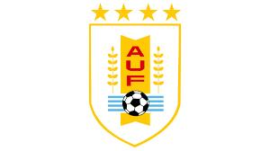
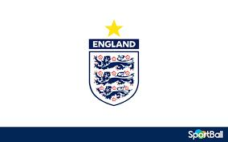
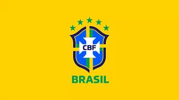
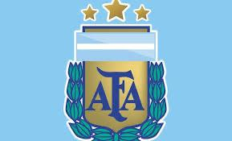
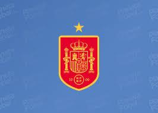
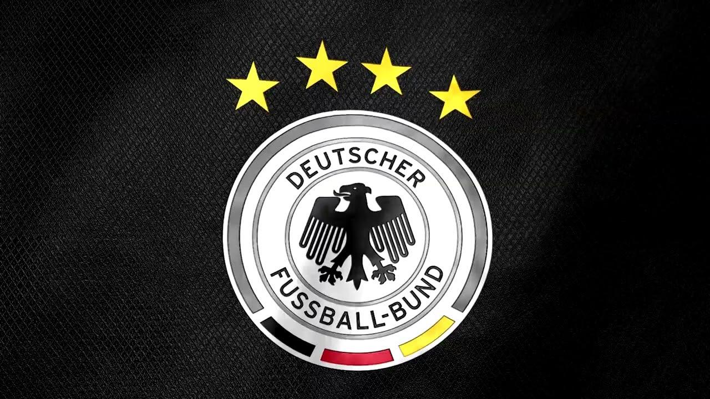
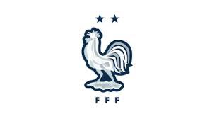

Equipos Campeones y Más Exitosos
- Brasil: 5 títulos (1958, 1962, 1970, 1994, 2002)
- Alemania: 4 títulos (1954, 1974, 1990, 2014)
- Italia: 4 títulos (1934, 1938, 1982, 2006)
- Argentina: 3 títulos (1978, 1986, 2022)
- Francia: 2 títulos (1998, 2018)
- Uruguay: 2 títulos (1930, 1950)
- Inglaterra y España: 1 título cada uno
El jugador con más goles en la historia de los mundiales es Miroslav Klose (Alemania),
con 16 goles. Pelé, considerado uno de los mejores jugadores de todos los tiempos,
es el único con tres títulos mundiales (1958, 1962, 1970).
Resumen de Finales de la Copa Mundial FIFA
- 1930 – Uruguay
- Campeón: Uruguay
- Final: Uruguay 4-2 Argentina
- Dato clave: Primera Copa del Mundo; solo participaron 13 selecciones.

- 1950 – Brasil
- Campeón: Uruguay
- Final: Uruguay 2-1 Brasil (Maracanazo)
- Dato clave: No hubo final directa; Uruguay ganó un cuadrangular final.
- 1966 – Inglaterra
- Campeón: Inglaterra
- Final: Inglaterra 4-2 Alemania Occidental (tiempo extra)
- Dato clave: Inglaterra gana su único título hasta la fecha. Gol polémico en la final.

- 1970 – México
- Campeón: Brasil
- Final: Brasil 4-1 Italia
- Dato clave: Pelé gana su tercer Mundial. Primera transmisión en color.

- 1978 – Argentina
- Campeón: Argentina
- Final: Argentina 3-1 Países Bajos (tiempo extra)
- Dato clave: Argentina gana su primer título como anfitrión en contexto político polémico.

- 1994 – Estados Unidos
- Campeón: Brasil
- Final: Brasil 0-0 Italia (3-2 penales)
- Dato clave: Primera final decidida por penales. Alta audiencia mundial.
- 2002 – Corea del Sur y Japón
- Campeón: Brasil
- Final: Brasil 2-0 Alemania
- Dato clave: Primer Mundial en Asia y con sede compartida. Ronaldo figura.
- 2010 – Sudáfrica
- Campeón: España
- Final: España 1-0 Países Bajos (gol de Iniesta en tiempo extra)
- Dato clave: Primer Mundial en África. Primer y único título de España.

- 2014 – Brasil
- Campeón: Alemania
- Final: Alemania 1-0 Argentina (gol de Götze en tiempo extra)
- Dato clave: Alemania golea 7-1 a Brasil en semifinales. Primer título como Alemania unificada.

- 2018 – Rusia
- Campeón: Francia
- Final: Francia 4-2 Croacia
- Dato clave: Segundo título francés con generación joven liderada por Mbappé.

- 2022 – Catar
- Campeón: Argentina
- Final: Argentina 3-3 Francia (4-2 penales)
- Dato clave: Uno de los mejores partidos. Messi se consagra. Primer Mundial en noviembre-diciembre.